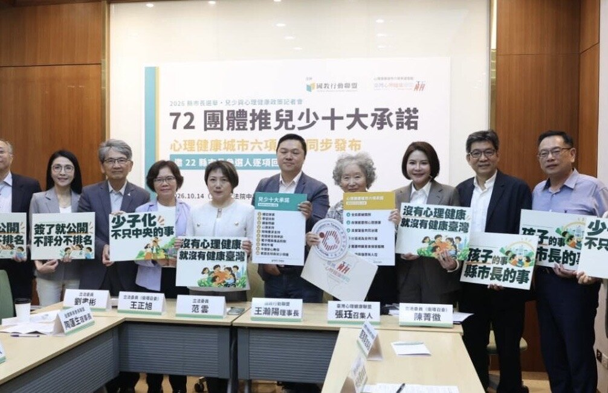
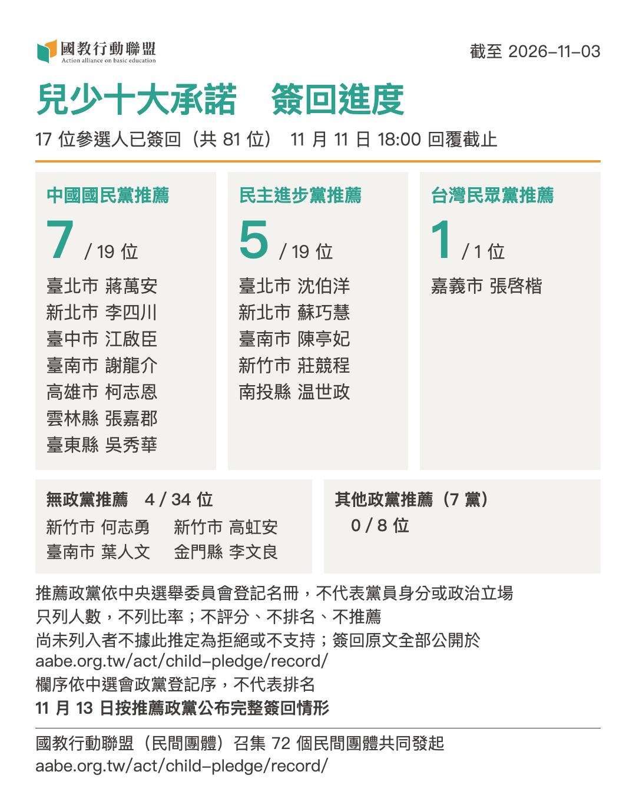

雙北、臺南等縣市主要候選人簽署兒少承諾 國教盟邀22縣市接力回應
江啟臣與柯志恩等也已簽署 11日截止回覆 13日公布兒少簽回情形

國教行動聯盟（簡稱「國教盟」）於2026年10月14日聯合72個民間團體，共同發起《兒少十大承諾書》，讓兒少政策進入選戰討論，已獲得跨政黨的公開簽署。依11月3日統計的兒少十大承諾公開紀錄，臺北市蔣萬安與沈伯洋、新北市李四川與蘇巧慧、臺南市陳亭妃與謝龍介均已完成簽署；臺中市江啟臣、高雄市柯志恩及臺南市葉人文也已簽署。國教盟今（4）日呼籲六都及其他縣市尚待回覆的參選人，於11月11日18時截止前逐項回應，讓孩子與家庭的需要不分縣市、不分政黨，都能成為施政重點。
目前六都仍有中國國民黨與民主進步黨推薦的參選人尚未列入兒少承諾的公開簽署名單。國教盟呼籲各推薦政黨中央，包括中國國民黨與民主進步黨，協助其推薦的參選人在期限前完成回應。其他政黨及無政黨推薦者亦依相同規則參與。尚未列入公開名單，不據此推定為拒絕或不支持。
六都以外也有回應 各地家庭都需要支持
六都之外，新竹市何志勇、高虹安、莊競程，南投縣温世政，雲林縣張嘉郡，嘉義市張啓楷，臺東縣吳秀華及金門縣李文良，也已完成兒少十大承諾的公開簽署。
兒少十大承諾由國教盟召集72個民間團體共同發起。依團體名稱歸納，名單涵蓋家長、校長與教師、托育與早療、兒少保護、心理健康與醫療公衛、家庭支持與社區關懷及宗教團體，所在縣市包括臺北、新北、桃園、新竹、臺中、雲林、南投、高雄、屏東、宜蘭。全國性組織有全國家長會長聯盟、中華民國中小學校長協會、中華民國營養師公會全國聯合會等；臺灣心理健康聯盟依其公開會員名冊有77個團體與單位（成員列名不代表個別單位共同發起）。把孩子的安全、照顧與心理健康寫成可追蹤的施政，是這些跨領域民間組織的共同要求。國教盟呼籲每一位參選人逐項回應。
國教盟理事長王瀚陽表示：「六都與其他縣市的孩子，都需要穩定的老師、安心的照顧和遇到困難時有人接手。各地條件不同，參選人可以提出符合地方需求的做法，也應讓市民知道願意承擔哪些工作，以及如何公開進度。」
辯論談兒虐與食安 改善要能持續追蹤
10月31日臺北市長電視辯論，蔣萬安與沈伯洋就兒少保護、校園食安及教育政策交鋒。國教盟主張，兒少安全應落實為清楚的接手責任；托育與教育政見應有必要人力；學校午餐發現缺失，應有改善期限與複查。這些要求已納入10月14日發布的兒少承諾書，供參選人逐項選擇並公開接受追蹤。
王瀚陽指出：「辯論提出的問題，選後還要繼續追蹤。家庭求助後由誰接手、轉介後是否真的得到服務，午餐缺失有沒有改善，都應有清楚的責任與進度。」兒少承諾要求非緊急家庭求助案件公開評估與轉介追蹤時限，涉及兒少安全風險者立即依法處理；各項新增服務應配置必要人力與行政支援。
心理健康承諾另行簽署 全年齡需求同受重視
臺灣心理健康聯盟發起的《心理健康城市六項承諾書》，面向全年齡市民，涵蓋日常促進、跨局處治理、當事人參與、社區支持、服務可及性與危機復原，由國教盟協力收件。依該專頁11月3日更新的紀錄，蔣萬安、沈伯洋、李四川、蘇巧慧，以及臺南市葉人文、陳亭妃、謝龍介等，也已列為簽署者。兩份承諾書分別簽署與刊登，實際承諾範圍依各份核對後回覆為準。
11日回覆截止 13日公布兒少結果
兒少十大承諾與國教盟協力推動的心理健康城市六項承諾，兩份均於10月14日公開發布，可全數或部分勾選，也可依各份規則附上說明。選前逐項確認願意承擔的工作；簽署兒少十大承諾且當選者，依承諾書於就任100日內公布所勾選項目的現況、分工、服務時限、分年期程及經費等規劃，之後每年公開成果；簽署心理健康承諾且當選者，依各項驗收公開，驗收已明定期限者從其期限，其餘由當選人自訂時限。個別條款明定的期限與依法即時處理的責任，仍須遵守。
國教盟將於11月13日公布兒少承諾的各縣市簽回情形，另附推薦政黨彙整（依中選會登記之推薦政黨列人數，不計比率、不排序）；心理健康承諾依既有專頁規則按縣市刊登。所有參選人適用同一標準，不評分、不排名、不推薦。尚未回覆與已收件待核對者，依各份規則如實處理。
國教盟邀請參選團隊於11月11日18時前，將承諾書的勾選、簽名及相關說明拍照或掃描，回傳至action.a.e0626@gmail.com。逾期回覆仍依專頁規則收件，並標註收件日期。
國教盟期待11月11日前，22縣市都有參選人簽回兒少十大承諾，讓市民選前可以查閱、選後可以對照追蹤。
附圖｜兒少十大承諾簽署情形（依推薦政黨列人數）

附錄｜兒少十大承諾共同發起團體（72 個）
依加入時間排列，不分先後；名單以兒少十大承諾專頁為準（2026 年 11 月 3 日查閱）。
- 台灣青少年犯罪防治學會
- 臺灣全方位設計教育協會（TAUDE）
- 中華民國中小學校長協會（SESPA）
- 財團法人赤子心教育基金會
- 董氏基金會
- 社團法人中華仁親社區關懷協會
- 台灣全國媽媽護家護兒聯盟
- 高雄市家長聯盟
- 家庭韌性行動聯盟（成立時集結逾 33 個組織團體與社會影響者）
- 任林教育基金會
- 社團法人國際兒少人權促進會
- 社團法人台灣青少年神經多樣性行動協會
- 台灣ICF研究學會
- 社團法人臺灣網路防護協會
- 社團法人新竹市精神健康協會
- 台灣家長守護婦幼權益協會
- 全國家長會長聯盟
- 全國家長教育志工聯盟
- 夏凱納靈糧堂
- 臺北市學校教育產業工會
- 社團法人台灣懷孕婦女關懷協會
- 臺灣心理健康聯盟（77 個團體與單位）
- 臺中市永馨全人關懷協會
- 社團法人高雄市基督教善之園福音協會
- 社團法人桃園市好厝邊全人關懷協會
- 沛恩托育中心
- 中華忠義果動關懷協會
- 社團法人台灣金古記念生命關懷協會
- 社團法人台灣彩虹愛家生命教育協會
- 社團法人台灣基督教利未之光音樂敬拜事奉協會
- 台灣守護有祢生命關懷協會
- 社團法人台灣托育協會
- 沐新生命成長協會
- 社團法人中華民國基督教神之道社會福利協會
- 財團法人愛心第二春文教基金會
- 風使全人教育中心
- 臺中市街頭藝人協會
- 社團法人中華育幼機構兒童關懷協會
- 社團法人台灣愛希望兒童關懷發展協會
- 臺灣兒童早期療育福利協會
- 財團法人杏陵醫學基金會
- 雲林縣行善社區關懷協會
- 社團法人中華國際全齡關照教育促進會
- 基督教鄉福麟洛教會
- 中華幼兒托育暨教保品質協會
- 台灣性教育學會
- 社團法人中華民國兒童健康聯盟
- 高雄市仁武區烏林社區發展協會
- 臺北市托育協會
- 天母國小特教家長會
- 宜蘭縣礁溪鄉聖母山莊生態發展協會
- 社團法人新北市智障者家長協會
- 社團法人中華基督教恩典之家協會
- 臺北市華德福教育推廣協會
- 台灣愛兒親師家長協會
- 得勝者教育協會
- 石門水庫教會青少年團契
- 高雄市茶緣茶藝協會
- 社團法人中華公民人權協會
- 全國高中高職家長會長協會
- 中華適性教育發展協會
- 中華民國家長會長聯合協會
- 臺中市城鄉發展協進會
- 北投關渡真實教會
- 社團法人台灣無毒世界協會
- 高雄市教會發展策略聯盟
- 社團法人屏東縣兒童與家庭教育輔助協會
- 中華民國營養師公會全國聯合會
- 社團法人台灣共善促進協會
- 台灣婦少權益關懷協會
- 社團法人南投縣草屯白厝角關懷協會
- 愛兒樂家庭創益關懷協會
聯絡與回傳資訊
- 聯絡：國教行動聯盟理事長 王瀚陽 0983-097-165
- 官網：https://aabe.org.tw
- 回傳信箱：action.a.e0626@gmail.com
- 兒少承諾書及規則：https://aabe.org.tw/act/child-pledge/record/download/
- 各縣市兒少簽署紀錄：https://aabe.org.tw/act/child-pledge/record/
- 心理健康承諾書與公開紀錄：https://aabe.org.tw/act/mental-health-city/
參考資料｜供媒體查證
- 國教行動聯盟（2026）。〈兒少十大承諾・民間團體連署〉〔專頁，2026年11月3日查閱〕。https://aabe.org.tw/act/child-pledge/
- 國教行動聯盟（2026）。〈承諾書下載與簽署規則〉〔兒少十大承諾專頁，2026年11月3日查閱〕。https://aabe.org.tw/act/child-pledge/record/download/
- 國教行動聯盟（2026）。〈各縣市兒少簽署紀錄〉〔專頁，2026年11月3日查閱〕。https://aabe.org.tw/act/child-pledge/record/
- 臺灣心理健康聯盟、國教行動聯盟（2026）。〈心理健康城市六項承諾書・縣市長參選人簽署與回覆〉〔專頁，11月3日更新，2026年11月3日查閱〕。https://aabe.org.tw/act/mental-health-city/
- 中央選舉委員會（2026，9月7日）。〈115年地方公職人員選舉候選人登記名冊〉〔附件1-1：直轄市長選舉候選人登記彙總表；附件3-1：縣市長選舉候選人登記彙總表〕。https://web.cec.gov.tw/central/article/64709
- 報導者（2026年10月31日）。〈2026台北市長候選人電視辯論：蔣萬安、沈伯洋互批雙重標準、迴避問題，學者評蔣表現穩健、沈打正面選戰〉。《報導者》。https://www.twreporter.org/a/2026-local-elections-taipei-mayoral-televised-debate
- 邱書昱（2026年10月31日）。〈辯論登場了！沈伯洋「先攻」提上任要解砍樹、兒虐和營養午餐三件事〉。《聯合報》。https://udn.com/news/story/124652/9848685
- 葉蓁芸（2026年10月15日）。〈蔣萬安、沈伯洋辯論會10/31舉辦 納交互詰問、媒體提問〉。《中央社》。https://www.cna.com.tw/news/aloc/202610150331.aspx
- 自由時報（2026年10月14日）。〈少子化不只中央的事！72民團遞雙考題 促22縣市長參選人表態〉。《自由時報電子報》。https://news.ltn.com.tw/news/politics/breakingnews/5606115
本頁為 2026 年 11 月 4 日國教盟新聞稿全文官網存查版，內文逐字照登、未經改寫。媒體採訪請聯繫上方新聞聯絡人。